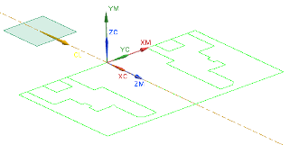

NX now displays the work plane for the spindle and lathe when you:
Open the MCS Spindle dialog box.
Select the MCS Spindle parent group in the Geometry view of the Operation Navigator.

NX displays the active work plane for the lathe and spindle as soon as you select the MCS, making it easier to view the orientation of the work plane as it relates to the MCS.
|
Application |
Manufacturing |
|
Prerequisite |
Turning operation |
|
Menu |
Operation Navigator→Geometry view →MCS_SPINDLE |